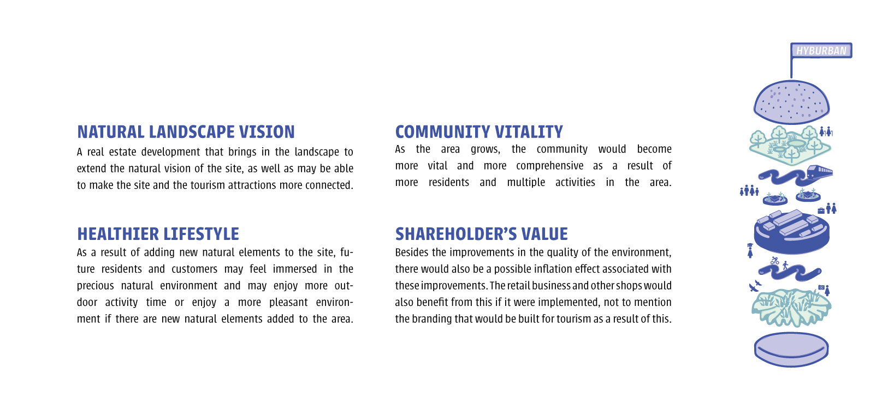
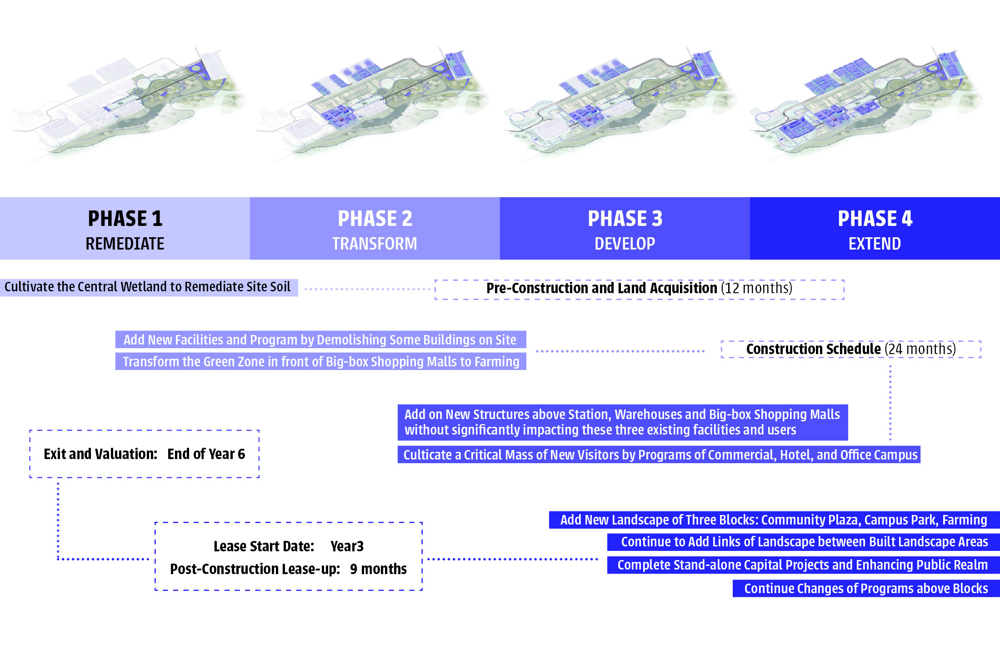
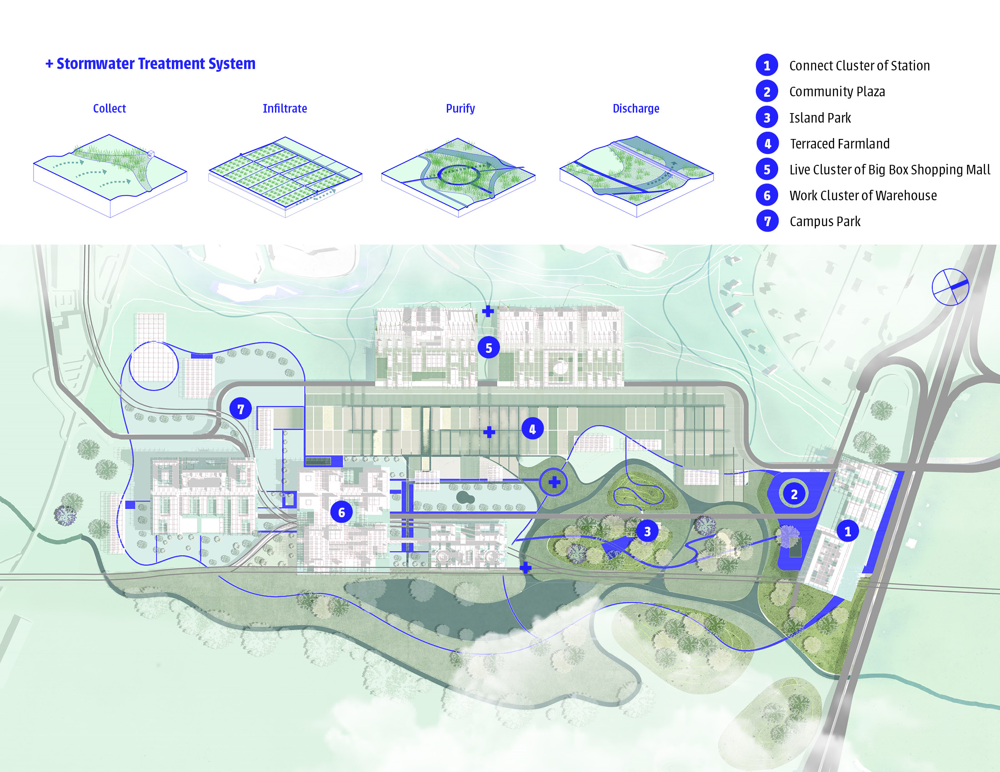
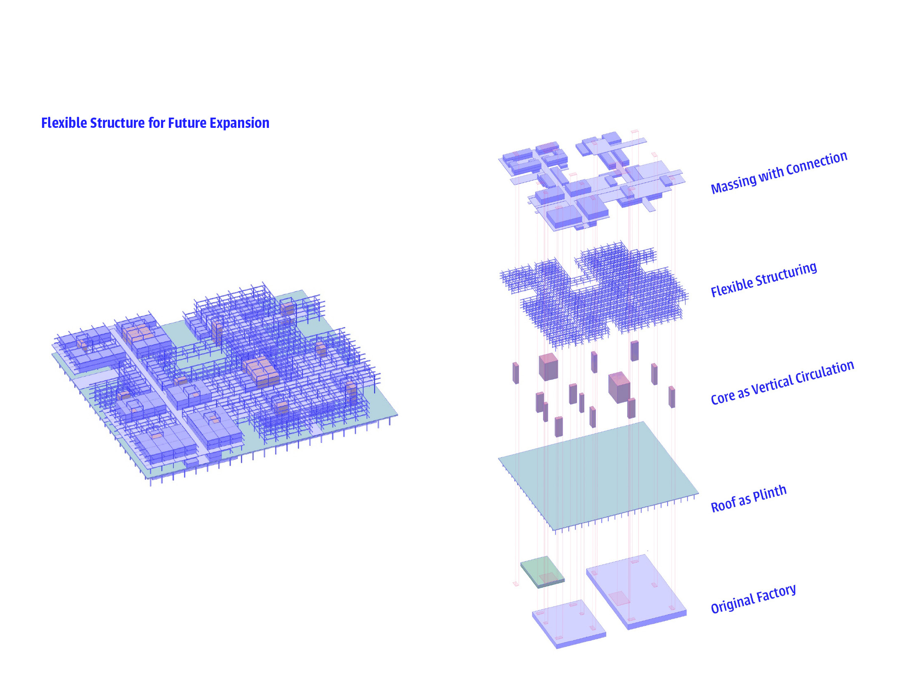
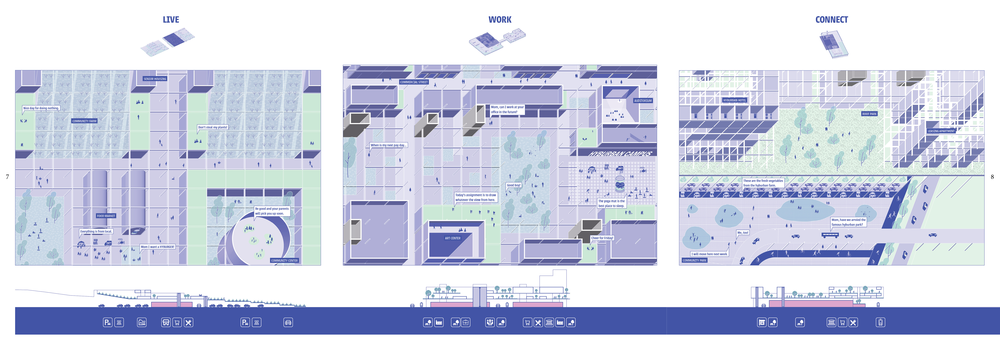
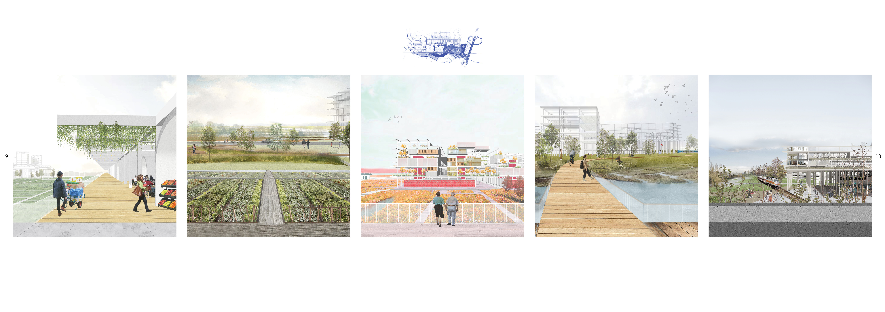
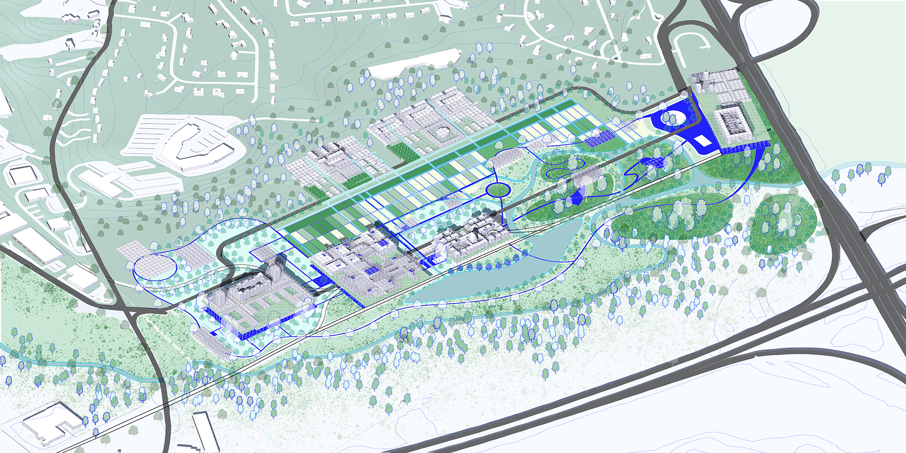
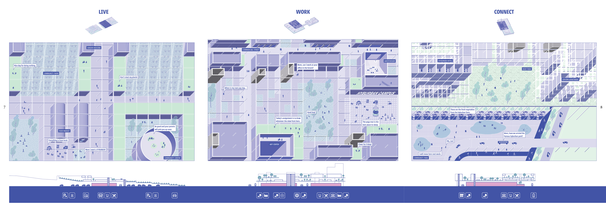
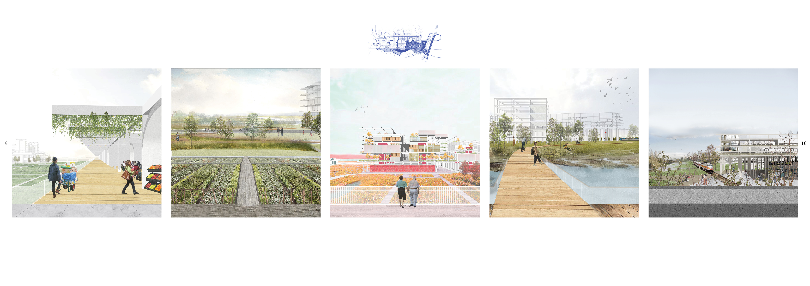
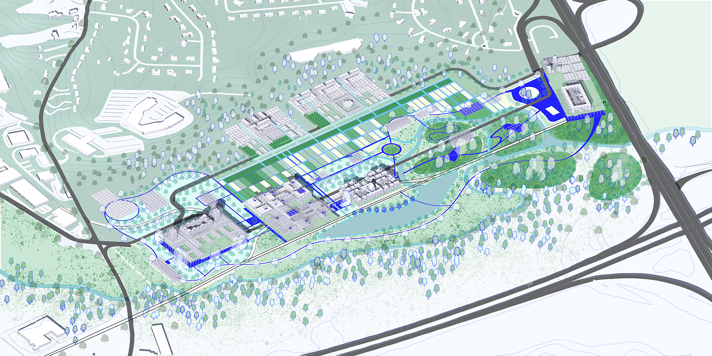

HYBURBAN
A New Model of American Suburb
WESTWOOD, MA
Group Project
Fall 2021
Plimpton-Poorvu Design Prize, Shortlisted
GSD 1221 Elements of Urban Design
Instructors: Alex Yuen, Peter Rowe
Team Members: Esther Xie, Qingyu Cai, Yingzhi He, Xiaoyao Ma (market analysis), Hanxin Xing (financial analysis)
Role in Team: conceptual planning (33%), architecture design (20%), landscape design (90%), visual representation (33%)
Hyburban aims to create a new model for the struggling American suburb centers that have little social functions and ecological values. It is also a manifesto against the current binary between urban lifestyle and suburban lifestyle, by providing social interactions and suburban ecological values at the same space.

In typical suburban development, everything is spread out and disconnected. There is no interaction between programs and no habitat connection. We propose stacking as the approach to hybridize programs and to encournage social interactions, and simultaneously providing space for ecological corridor.
   




